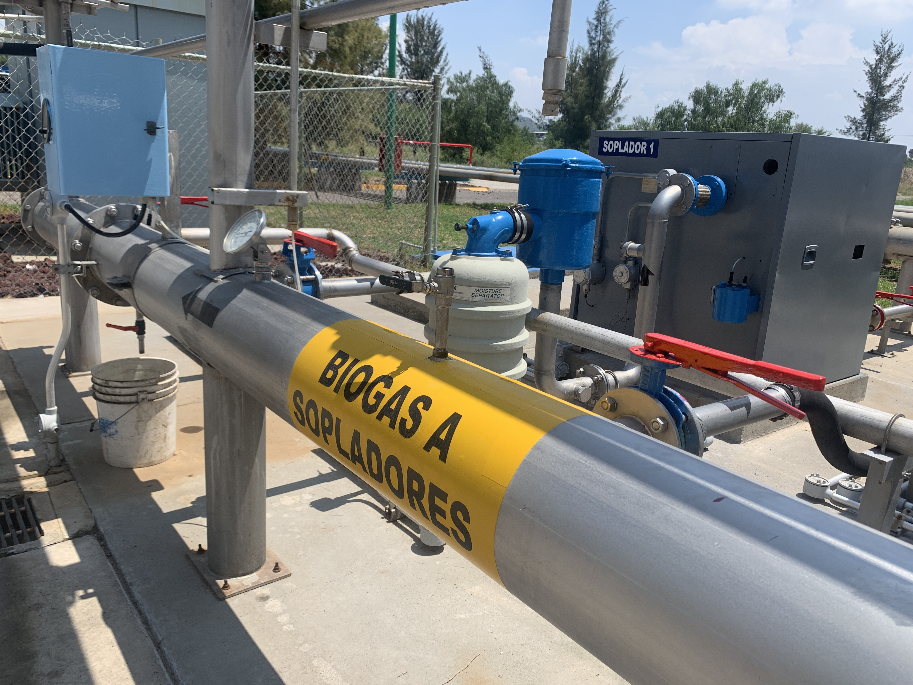

Remueve H₂S, humedad y partículas del biogás generado por el biodigestor. Es la etapa previa para cualquier uso confiable: motogeneración, caldera, horno o paso siguiente al upgrading.

El biogás crudo no es directamente utilizable: contiene compuestos corrosivos, agua e impurezas mecánicas. Las tres etapas siguientes son el mínimo técnico antes de inyectarlo a un consumidor.
El H₂S forma ácido sulfúrico al combinarse con humedad — ataca metales del motor, escape y caldera. Lo retiramos con lechos secos o procesos biológicos.
El agua condensa en líneas frías y forma siloxanos en motores. Se elimina con enfriamiento y separación gravimétrica.
Filtros de retención para sólidos arrastrados desde el biodigestor o líneas. Protege turbomáquinas y válvulas de control.
Composición, caudal, demanda y mejor ruta. Te decimos si te basta con acondicionamiento o si conviene escalar.